건설재료시험기능사 (2008-10-05 기출문제)
1과목: 건설재료
1. 알루미나 시멘트에 관한 설명 중 옳은 것은?
- 화학작용에 대한 저항성이 작아 풍화되기 쉽다.
- 조기강도가 커서 긴급공사에 적합하다.
- 해수공사에는 부적합하나 서중공사에는 적당하다.
- 발열랑이 적어 매스콘크리트에 적합하다
(정답률: 73%)

2. 목재의 건조 방법 중 자연 건조방법은?
- 끓임법
- 공기건조법
- 증기건조법
- 열기건조법
(정답률: 90%)
3. 아래의 표에서 설명하는 물질은?
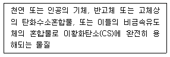
- 역청
- 메탄
- 고무
- 글리세린
(정답률: 66%)
4. 니트로셀룰로오스에 니트로글리세린을 넣어 콜로이드화 하여 만든 가소성의 폭약은?
- 교질 다이너마이트
- 분말상 다이너마이트
- 칼릿
- 질산에멀션폭약
(정답률: 58%)
5. 석재의 일반적인 성질에 대한 설명으로 틀린 것은?
- 석재의 인장강도는 압축강도에 비해 매우 크다.
- 흡수율이 클수록 강도가 작고. 동해를 받기 쉽다.
- 비중이 클수록 압축강도가 크다.
- 화강암은 내화성이 낮다.
(정답률: 76%)
6. 시멘트 저장에 관한 설명으로 잘못된 것은?
- 방습적인 구조로 된 사일로 또는 창고에 저장하여야 한다.
- 품종별로 구분하여 저장하여야 한다.
- 저장량이 많을 경우 또는 저장기간이 길어질 경우 15포대 이상으로 쌓는다.
- 저장 중에 약간이라도 굳은 시멘트는 공사에 사용하지 않아야 한다.
(정답률: 92%)
7. 포졸란을 사용한 콘크리트의 특징으로 부적당한 것은?
- 블리딩 및 재료 분리가 적어진다.
- 발열량이 증가한다.
- 장기 강도가 크다.
- 수밀성이 커진다.
(정답률: 53%)
8. 블론 아스팔트와 비교한 스트레이트 아스팔트의 특성에 대한 설명으로 틀린 것은?
- 탄성이 작다.
- 연화점이 비교적 낮다.
- 감온비가 비교적 크다.
- 내후성이 상당히 크다.
(정답률: 56%)
9. 화약취급상 주의사항 중 옳지 않은 것은?
- 다이너마이트는 햇볕의 직사를 피하고 화기가 있는 곳에 두지 않는다.
- 뇌관과 폭약은 사용에 편리하도록 한곳에 보관한다.
- 화기와 충격에 대하여 각별히 주의한다.
- 장기간 보존으로 인한 흡습, 동결에 주의하고 온도와 습도에 의한 품질의 변화가 없도록 해야한다.
(정답률: 92%)
10. 콘크리트부재의 크리프( creep )에 대한 설명 중 옳지 않은 것은?
- 하중 재하시 코크리트의 재령이 작을수록 크리프는 크게 일어난다.
- 부재의 치수가 클수록 크리프는 크게 일어난다
- 물-시멘트비가 클수록 크리프는 크게 일어난다.
- 작용하는 응력이 클수록 크리프는 크게 일어난다.
(정답률: 57%)
11. 골재의 밀도라고 하면 일반적으로 골재가 어떤 상태일때의 밀도를 기준으로 하는가?
- 노건조상태
- 공기중 건조상태
- 표면건조 포화상태
- 습윤상태
(정답률: 83%)
12. 다음 토목공사용 석재중 압축강도가 가장 큰 것은?
- 대리석
- 응회암
- 사암
- 화강암
(정답률: 85%)
13. 백주철을 열처리하여 연성과 인성을 크게 한 주철은 다음중 어느 것인가?
- 가단주철
- 보통주철
- 고급주철
- 특수주철
(정답률: 60%)
14. 콘크리트용 혼화재료 중에서 워커빌리티(workability)를 개선하는데 영향을 미치지 않는 것은?
- AE제
- 응결경화촉진제
- 감수제
- 시멘트 분산제
(정답률: 70%)
15. 시멘트가 응결할 때 화학적 반응에 의하여 수소가스를 발생시켜, 콘크리트 속에 아주 작은 기포가 생기게 하는 혼화제는?
- 발포제
- 방수제
- AE제
- 감수제
(정답률: 82%)
16. 콘크리트 압축강도용 공시체의 파괴 최대하중이 37100 kg일 때 콘크리트의 압축강도는 약 얼마인가? (단. 공시체는 ø15☓30cm 임)
- 53kg/ccm2
- 1⑤kg/cm2
- 155kg/cm2
- 210kg/cm2
(정답률: 49%)
17. 흙의 입도시험을 하기 위하여 40%의 과산화수소용액 100g을 6%의 과산화수소 용액으로 만들려고 한다. 물의 양은 약 얼마나 넣으면 되는가?
- 567g
- 412g
- 356g
- 127g
(정답률: 30%)
18. 굵은 골재의 마모시험에 사용되는 가장 중요한 시험기는?
- 지깅시험기
- 로스엔젤레스시험기
- 표준침
- 원심분리시험기
(정답률: 88%)
19. 콘크리트 슬럼프 시험의 가장 중요한 목적은?
- 비중측정
- 워커빌리티측정
- 강도측정
- 입도측정
(정답률: 79%)
20. 골재의 체가름시험에서 체 눈에 막힌 알갱이는 어떻게 처리하는가?
- 파쇄되지 않도록 주의하면서 되밀어 체에 남은 시료로 간주한다.
- 손으로 힘주어 밀어 빼낸 후 통과된 시료로 간주한다.
- 부서져도 상관 없으므로 힘껏 빼낸다.
- 전체 골재에서 제외하여 무효로 한다.
(정답률: 80%)
2과목: 건설재료시험
21. 역청혼합물의 소성흐름에 대한 저항력 시험에서 가장 많이 사용되는 시험기는?
- 마샬시험기
- 슈미트해머
- 로스엔젤레스시험기
- 길모어침
(정답률: 60%)
22. 콘크리트 슬럼프 시험을 할 때 콘크리트를 처음 넣는 양은 슬럼프 시험용 콘 부피의 얼마까지 넣는가?
- 3/4
- 1/2
- 1/3
- 1/5
(정답률: 91%)
23. 시멘트 모르타르 압축강도 시험을 할 때 사용하는 표준 모르타르의 제작시 시멘트와 표준모래의 무게비는?(관련 규정 개정전 문제로 여기서는 기존 정답인 2번을 누르면 정답 처리됩니다. 자세한 내용은 해설을 참고하세요.)
- 1 : 2
- 1 : 2.25
- 1 : 3
- 1 : 3.45
(정답률: 40%)
24. 흙의 수축한계를 결정하기 위한 수축접시 1개를 만드는 시료의 양으로 적당한 것은?
- 15g
- 30g
- 50g
- 150g
(정답률: 78%)
25. KS F 2414에 규정된 콘크리트의 블리딩 시험은 굵은 골재의 최대 치수가 얼마 이하인 경우에 적용하는 지 그 기준은?
- 25mm
- 50mm
- 60mm
- 80mm
(정답률: 63%)
26. 흙의 향수비를 측정할 때 시료를 몇 0C로 항은 건조기에서 항량이 될 때까지 건조하는가?
- 100±50C
- 110±50C
- 120±50C
- 130±50C
(정답률: 89%)
27. 시멘트 비중 시험에서 1회 시험에 사용하는 시멘트의 양은 어느 정도 필요한가?
- 35g
- 46g
- 58g
- 64g
(정답률: 77%)
28. 반죽질기에 따른 직업의 어렵고 쉬운 정도 및 재료의 분리에 저항하는 정도를 나타내는 굳지 않은 콘크리트의 성질을 무엇이라고 하는가?
- 트래피커빌리티
- 워커빌리티
- 성형성
- 피니셔빌리티
(정답률: 79%)
29. 콘크리트 배합설계시 단위수량이 160kg/m3, 단위시멘트량이 320kg/m3 일 때 물-시멘트비는 얼마인가?
- 30%
- 40%
- 50%
- 60%
(정답률: 84%)
30. 골재의 안정성 시험에 사용되는 용액으로 알맞은 것은?
- 황산나트륨용액
- 황산마그네슘용액
- 염화칼슘용액
- 가성소다용액
(정답률: 76%)
31. 어느 흙을 체가름시험한 입경가적곡선에서 D10=0.095mm, D30=0.14mm, D60=0.16mm 얻었다. 이 흙의 균등계수는 얼마인가?
- 0.59
- 1.68
- 2.69
- 3.68
(정답률: 69%)
32. 액성한계 시험 방법에 대한 설명 중 틀린 것은?
- 0.425mm체로 쳐서 통과한 시료 약 200g 정도를 준비한다.
- 황동접시의 낙하 높이가 10±1mm가 되도록 낙하장치를 조정한다.
- 액성한계 시험으로부터 구한 유동곡선에서 낙하 횟수 25회에 해당하는 함수비를 액성한계라 한다.
- 크랭크를 1초에 2회전의 속도로 접시를 낙하시키며, 시료가 10mm 접촉 할 때까지 회전 시켜 낙하횟수를 기록한다.
(정답률: 59%)
33. 모르타르의 압축강도가 140.5kg/cm2이었다. 이 때의 파괴하중(최대하중)은 얼마인가?(오류 신고가 접수된 문제입니다. 반드시 정답과 해설을 확인하시기 바랍니다.)
- 584.5kg
- 14⑤kg
- 24⑤kg
- 3372kg
(정답률: 19%)
34. 어떤 점토시료의 수축한계 시험한 결과 값이 표와 같을 때 수축지수를 구하면?
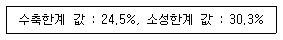
- 2.3%
- 2.8%
- 3.3%
- 5.8%
(정답률: 81%)
35. 아스팔트 침입도 시험에서 침이 시료속으로 0.1mm 들어갔을 때 침입도는?
- 0.1
- 1
- 10
- 100
(정답률: 84%)
36. 콘크리트의 블리딩에 대한 설명 중 옳지 않은 것은?
- 콘크리트의 재료 분리 경향을 알 수 있다.
- 블리딩이 심하면 콘크리트의 수밀성이 떨어진다.
- 분말도가 높은 시멘트를 사용하면 블리딩을 줄일 수 있다.
- 일반적으로 블리딩은 콘크리트를 친 후 5시간이 경과 하여야 블리딩 현상이 발생한다.
(정답률: 74%)
37. 콘크리트의 압축강도시험을 위한 공싲체의 제작이 끝나 몰드를 떼어낸 후 습윤 양생을 한다. 이때 가장 적당한 양생온도는?
- 8~12°8C
- 12~1601C
- 18~2201C
- 26~3002C
(정답률: 86%)
38. 흙을 국수모양으로 밀어 지름이 약 3mm굵기에서 부스러질때의 함수비를 무엇이라 하는가?
- 액성한계
- 수축한계
- 소성한계
- 자연한계
(정답률: 82%)
39. 콘크리트용 모래에 포함되어 있는 유기불순물 시험에 사용되지 않는 것은?
- 알코올 용액
- 탄산암모늄 용액
- 탄닌산 용액
- 수산화나트륨 용액
(정답률: 52%)
40. 다음 그림은 강의 응력과 변형률의 관계를 표시한 곡선이다. 영구 변영을 일으키지 않는 탄성한도를 나타내는 점은?
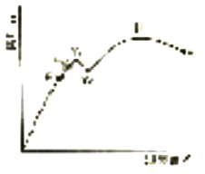
- F
- E
- Y1
- U
(정답률: 70%)
3과목: 토질
41. 슬럼프 시험에서 콘크리트가 내려 앉은 길이를 어느 정도의 정밀도로 측정하는가?
- 3mm
- 5mm
- 7mm
- 10mm
(정답률: 80%)
42. 평판재하시험에서 규정된 재하판의 지름치수가 아닌 것은?
- 30cm
- 40cm
- 50cm
- 75cm
(정답률: 76%)
43. 골재의 조립률을 구할 때 사용되는 체가 아닌 것은?
- 40mm체
- 25mm체
- 10mm체
- 0.15mm체
(정답률: 80%)
44. 아스팔트의 인화점이란 무엇인가?
- 아스팔트 시료를 가열하여 휘발 성분에 불이 붙어 약10초간 불이 붙어 있을 때의 최고 온도를 말한다.
- 아스팔트 시료를 가열하여 휘발 성분에 불이 붙을때의 최저 온도를 말한다.
- 아스팔트 시료를 가열하면 기포가 발생하는데 이때의 최고 온도를 말한다.
- 아스팔트 시료를 잡아당길 때 늘어나다 끊어진 길이를 말한다.
(정답률: 64%)
45. 흙의 비중시험에 사용하는 기계 및 기구가 아닌 것은?
- 스페이서 디스크
- 항온 건조로
- 데시케이터
- 피크노미터
(정답률: 53%)
46. 압밀 시험으로부터 얻을 수 없는 것은?
- 투수계수
- 압축지수
- 체적변화계수
- 연경지수
(정답률: 40%)
47. 흙의 연경도에서 소성한계와 액성한계 사이에 있는 흙은 어떤 상태에 있는가?
- 고체 상태
- 반고체 상태
- 소성 상태
- 액체 상태
(정답률: 62%)
48. 점성토에 대하여 일축압축 시험을 한 결과 자연상태의 압축 강도가 1.5kg/cm2이고 되비빔한 경우의 압축강도가 0.28kg/cm2이었다. 이 흙의 예민비는 얼마인가?
- 1.3
- 1.9
- 5.6
- 17.8
(정답률: 37%)
49. 실험실에서 측정된 최대 건조 단위무게가. 1.64g/cm3이었다. 현장 다짐도를 95%로 하는 경우 현장 건조단위무게의 최소치는?
- 1.73g/cm3
- 1.62g/cm3
- 1.56g/cm3
- 1.45g/cm3
(정답률: 47%)
50. 흙의 입자의 크기 순서로 된 것은?
- 자갈 > 모래 > 점토 > 실트
- 모래 > 자갈 > 실트 > 점토
- 자갈 > 모래 > 실트 > 점토
- 콜로이드 > 모래 > 점토 > 실트
(정답률: 45%)
51. 그림과 같은 정사각형 기초에 P인 등분포하중이 재하될 때 기초면 아래 Z깊이에서의 △P값을 산출하는 식으로 옳은 것은? (단, 2 : 1 분포법을 사용한다 )
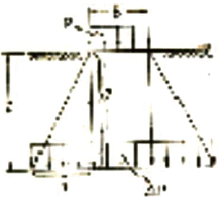
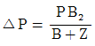
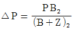
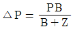
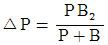
(정답률: 50%)
52. 현장다짐을 할 때에 현장 흙의 단위 무게를 측정하는 방법으로 옳지 않은 것은?
- 절삭법
- 모래 치환법
- 고무막법
- 아스팔트 치환법
(정답률: 59%)
53. 간극비 1.1. 건조단위무게가 1.2⑤g/cm3 인 흙에 있어서 비중은 얼마인가?
- 0.890
- 1.865
- 2.531
- 2.651
(정답률: 28%)
54. 평판 재하 시험에서 1.25mm 침하량에 해당하는 하중 강도가 1.25kg/cm2 일때 지지력 계수(K)는 얼마인가?
- K = 5kg/cm3
- K = 15kg/cm3
- K = 20kg/cm3
- K = 10kg/cm3
(정답률: 33%)
55. 사질토 지반에서 유출 수량이 급격하게 증대되면서 모래가 분출되는 현상을 무엇이라고 하는가?
- 침투현상
- 배수현상
- 분사현상
- 동상현상
(정답률: 75%)
56. 지름이 40mm, 높이 100mm인 용기에 현장 습윤시료를 채취하여 시료의 무게를 측정 했더니 250g이었다. 흙의 비중이 2.67일 때 습윤 단위 무게(lt)는 약얼마인가?
- 1g/cm3
- 2g/cm3
- 3g/cm3
- 4g/cm3
(정답률: 33%)
57. 최적 함수비 (OMC)를 구하려 한다. 다음 중 어떤 시험을 실시하여야 구할 수 있는가?
- CBR시험
- 다짐시험
- 일축압축시험
- 직겁 전단시험
(정답률: 48%)
58. 얕은 기초의 종류가 아닌 것은?
- 전면기초
- 말뚝기초
- 독립 푸팅기초
- 복합 푸팅기초
(정답률: 76%)
59. 일축압축시험에서 파괴면과 최대 주응력이 이루는 각을 구하는 식으로 옳은 것은?
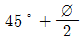
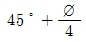
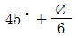
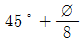
(정답률: 60%)
60. 점토와 모래가 섞여있는 지반의 극한지지력이 60t/m2 이라면 이 지반의 허용지지력은? (단, 안전율은 3이다.)
- 20 t/m2
- 30 t/m2
- 40 t/m2
- 50 t/m2
(정답률: 74%)